電腦科學領域歷經多年的發展，從過去的打孔卡到現今的 AI，短短不到百年的時間就歷經了多次的典範轉移。過去寫程式做系統開發，要對電路線路與物理技術非常嫻熟；而到現在 AI 的出現，每個人都可以利用簡單的自然語言就能與 AI 一同協作打造各式各樣的應用…
程式與系統開發方式的演變概覽
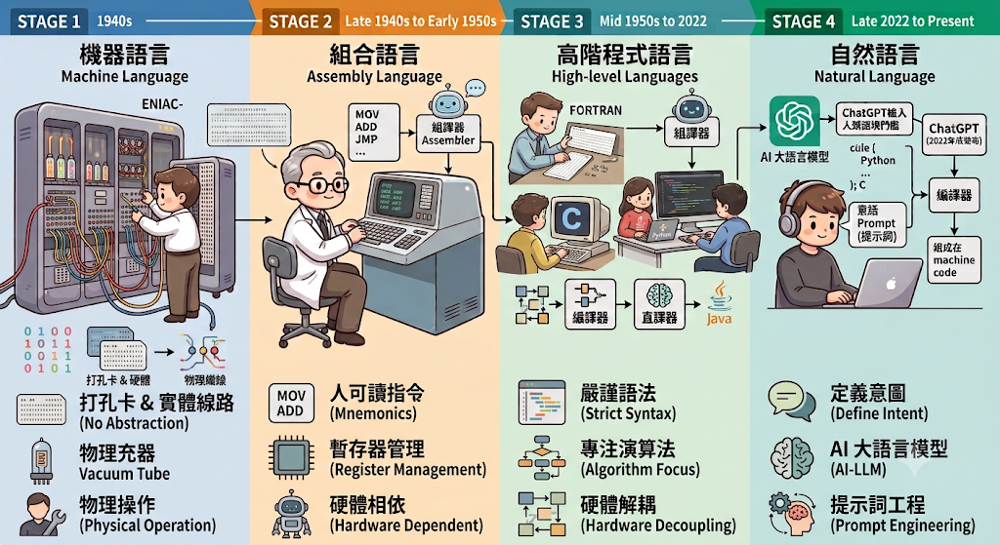
第一階段：1940年代（機器語言 Machine Language）
- 時代背景：二戰前後，最早的電腦（例如 ENIAC）誕生。ENIAC（Electronic Numerical Integrator and Computer，電子數值積分計算機）是世界上第一台可程式化的通用電子數位計算機，於 1943–1945 年間由 John Mauchly 與 J. Presper Eckert 在賓州大學打造，最初用於計算美軍的彈道射擊表。它擁有約 1.8 萬顆真空管、重達 30 噸，速度比人工計算快上千倍，但當時沒有程式語言，「編程」必須靠實體插線與撥動開關來完成。
- 溝通媒介：二進位代碼（
0與1）、打孔卡片、實體線路插拔。 - 開發者的狀態：當時的「工程師」更像是在做物理操作，直接在硬體層面撥動開關，把電訊號送進真空管裡。
- 技術限制：換一台不同型號的電腦，同一套運算邏輯就必須重新打孔、重新接線。
第二階段：1940年代末期～1950年代初期（組合語言 Assembly Language）
- 時代背景：第一代馮·紐曼架構（Von Neumann architecture）的電腦開始運作，科學家受夠了無窮無盡的
0和1。 - 溝通媒介：英文縮寫與助記符（如
MOV,ADD,JMP）。 - 發展出了組譯器（Assembler），開發者終於可以用人類看得懂的短單字來代表二進位指令。
- 技術限制：雖然不用寫
0和1，但依然被死死綁在硬體架構上。開發者還是得親自管理 CPU 暫存器與記憶體位址，且不同硬體廠商的組合語言完全不互通。
第三階段：1950年代中期～2022年（高階程式語言 High-level Languages）
這是軟體工程史上最漫長、分支最龐大的一個時代。人類在這個階段停留了將近 70 年，並在內部經歷了多次微小的典範轉移：
- 1950年代中期（科學與商業運算）：FORTRAN（1957）和 COBOL（1959）誕生，人類第一次能用類似數學公式與基礎英文句型的語法來寫程式。
- 1970年代（系統級抽象）：C 語言（1972）出現，成為現代軟體工業的基石，幾乎所有後來的作業系統都基於此。
- 1990年代（物件與網際網路）：Java（1995）、Python、C++ 普及，人類開始用「物件導向」來模擬真實世界的架構。
- 溝通媒介：極度嚴謹的英文語法、迴圈（
for,while）、條件判斷（if/else）。 - 發展出了編譯器（Compiler）與直譯器（Interpreter），實現了真正的「硬體解耦」，工程師終於不用管底層 CPU 長怎樣。
- 技術限制：語法容錯率為零。倘若少一個分號、縮排錯誤，程式就會直接崩潰。
第四階段：2022年底～至今（自然語言 Natural Language）
- 時代背景：以 ChatGPT（2022年底發布）為標誌性起點，大語言模型（LLM）突破了理解人類語境的門檻。
- 溝通媒介：人類的日常自然語言（甚至包含錯字與語病）＋ 提示詞（Prompt）。
- 迎來了 AI 大型語言模型。開發者從「寫執行步驟的人（How to do）」變成了「定義目標與意圖的人（What I want）」。只需下達指令，AI 就能將自然語言「轉譯」成 Python 或 C 語言，再交由傳統編譯器轉為機器碼。
- 技術特徵：程式開發的門檻被極限壓縮。軟體工程的核心能力從「默寫語法」轉變為「精確的系統思考」與「溝通表達能力（Prompt Engineering）」。
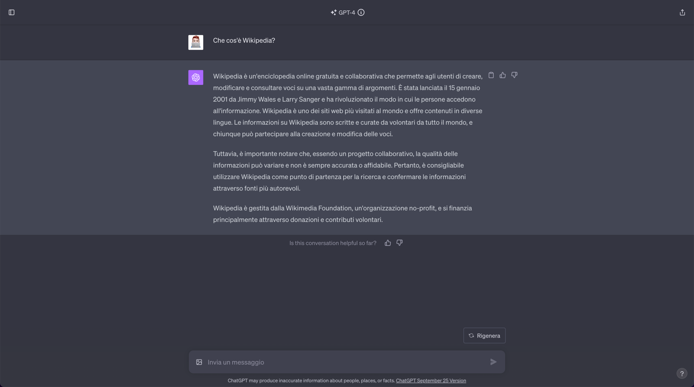
ChatGPT 使用者介面截圖。2022 年底發布的 ChatGPT 標誌著自然語言時代的起點，開發者只需用日常語言下達指令，AI 便能理解意圖並轉譯為程式碼。src: Wikimedia Commons（CC BY 3.0）現代開發技術棧
開發應用與系統的工作流程，已經從單純寫程式變成與 AI 協作寫程式。接下來看看現代開發可以使用哪些技術棧：
前端
現在新專案大部分都會從 Meta framework 開始，比較少人會想自己從零組合造輪子。
- Meta framework 是常見起點：Next.js 和 Nuxt 內建路由、資料取得、快取、渲染策略，省下不少重造輪子的時間。
- React Server Components + SSR：讓 server-first 變成預設做法，只把真正需要互動的部分送到瀏覽器。
- TypeScript：2025 年已超越 Python 和 JavaScript，成為 GitHub 上貢獻者最多的語言。2026 年還在正式專案寫純 JavaScript 多少會被當成有點過時。
後端
後端並不像前端那樣擁有如此明顯的典範轉移，則比較像是看團隊需求選擇，但雲端原生已經算是預設的選擇：
- Node.js/TypeScript、Python（Django/FastAPI）、Go、Rust 都還很活躍，選擇通常取決於團隊背景與需求。
- 如果產品會應用到 AI/ML，Python 的 FastAPI 是比較常見的選擇，畢竟 AI 生態系是 Python 優先的，LangChain、LlamaIndex、DSPy、CrewAI 全部都是 Python 原生。
- 架構上 serverless 和 microservices 依然是主流，雲端原生（AWS/GCP/Azure）搭配容器編排也是常使用的方式。
AI 應用開發
這塊是目前變動最快的，也最難整理出一套穩定技術棧：
- LangChain + FastAPI + Next.js：這套組合被不少人稱為 2026 年比較受矚目的技術棧，滿適合需要整合 LLM、做 AI 副駕駛的產品。
- 常見的切分方式是：Next.js 處理前端與使用者體驗，FastAPI 專門處理 AI 推論與 pipeline，兩邊用型別化的 API 合約溝通。
- 建議先把架構骨架定下來就好，工具鏈細節（agent framework 用哪個、RAG pipeline 接哪個向量資料庫）留到動手做的時候再查。
跨平台 App
- React Native + Expo：如果本來就熟悉 React、TypeScript，這條路走起來比較順，網頁端的元件邏輯可以直接共用，Expo 現在是官方推薦的預設起點。
- Flutter：如果產品比較動畫密集、視覺一致性是核心賣點（例如要求中階 Android 也保證 60/120fps），或團隊本身沒有 React 背景，Flutter 自己畫像素，跨裝置的視覺一致性目前 React Native 還做不太到。
開發部署
部署沒有標準答案，取決於專案類型與預算：
- Next.js 專案優先考慮 Vercel + Supabase（原廠平台，零配置，但 Hobby 方案不能商用）。
- 預算有限、流量會快速成長選 Cloudflare Pages（幾乎無限免費頻寬，但 Workers 不是完整 Node.js 環境）。
- 後端有 AI 推論需求可搭配 Railway、Fly.io 或 Modal（容器/長連線模型，不受 serverless 執行時間限制）。
- 需要精細控制基礎設施，或已有既有雲端資源則考慮 AWS/GCP/Azure 或自管 Docker + VPS，學習曲線最陡但彈性最大。
技術棧參考資源（補底層理解）：
Python
- 為你自己讀 CPython 原始碼——理解直譯器運作，對 AI 效能工程蠻有幫助的
- Fluent Python（第二版）——被公認是「寫出道地、高效 Python」的黃金標準，深入資料模型、裝飾器、上下文管理器這些語言內部機制，不只是教語法，是教你「Python 為什麼這樣設計」
- Real Python 進階教學專區——涵蓋並行處理（concurrency）、元編程（metaprogramming）、效能優化、CPython 內部運作、C 擴充套件，內容扎實、免費，是 Real Python 官方整理的進階學習路徑
- Raymond Hettinger 的 PyCon 演講——他是 Python 核心開發者之一，也是社群公認最會講技術的人，像是「Transforming Code into Beautiful, Idiomatic Python」這類演講，YouTube 上都找得到完整版，看完會對「什麼是 Pythonic」有全新理解
- Python 官方文件的 What's New——每個新版本發布時官方寫的完整說明，養成習慣讀這個，會發現很多你天天用卻不知道存在的新特性，也是了解語言演進方向最直接的管道
- Real Python：Async IO 完整教學——Python 的非同步程式設計是最容易學了語法但用不好的一塊，這篇把
asyncio的概念和實務講得很完整，對接 FastAPI 這類非同步框架會有幫助
TypeScript
- 深入理解 TypeScript（中文）——進階向，值得讀
- Total TypeScript Essentials——Matt Pocock 整理的精華
- Bun Runtime——現代 TypeScript 執行環境，2025 年 12 月被 Anthropic 收購，現在是 Claude Code 底層基礎設施之一，維持開源、MIT 授權
React 生態 / Next.js
- React 官方文件 Quick Start——React 19 的起點
- Next.js 官方 Learn 課程——免費互動課程，帶你從零建一個財務儀表板，涵蓋路由、資料抓取、串流、身份驗證，官方團隊寫的，算是最權威的起點
- Next.js App Router 官方文件——查細節功能會用到，2026 年 Pages Router 已進入維護模式，直接學 App Router 就好
- Electron——跨平台桌面應用（工具類產品常用）
- Capacitor by Ionic——Web 打包成原生 App，通常會比從零學 Flutter/Dart 快一些上線（這點是合理推論，沒查到 2026 年的具體數據佐證）
後端 / AI 應用開發
- FastAPI 官方 Learn 文件——官方形容這是一本書、一門課，也是官方推薦的學習路徑，從基礎到進階都涵蓋，品質公認很高
- LangChain 官方 Learn 文件——官方教學、概念說明與 RAG/agent 範例，是目前最新版本（LangChain v1.x）的權威參考，這塊工具鏈變動快，建議直接看官方文件而非教學文章，比較不會學到過時寫法
跨平台 App
- React Native + Expo——Expo 官方文件，2026 年官方推薦的 React Native 起手式
- Flutter——Flutter 官方文件
系統與資料基礎
開發應用與系統的工作流程，除了知道怎麼跟 AI 協作、怎麼用好工具之外，還有一塊很容易被忽略、但決定系統扛不扛得住的基礎知識。
資料結構與演算法基礎
它決定的是你寫出來的程式碼會不會在資料量變大時垮掉。
- 常見資料結構：陣列、雜湊表（hash table）、鏈結串列、樹（尤其是二元搜尋樹）、圖（graph）——不用背到能手刻紅黑樹，但要知道每種結構的查找、插入、刪除的時間複雜度大概是多少，以及什麼情境該用哪種。
- 時間複雜度（Big O）：能看懂 O(1)、O(log n)、O(n)、O(n log n)、O(n²) 的差異，並在寫程式時大致判斷自己寫的迴圈屬於哪一種，是資深與初階工程師最明顯的分水嶺之一。
- 排序與搜尋演算法：不用手刻，但要理解為什麼資料庫索引用 B-tree、為什麼二分搜尋比線性搜尋快這麼多。
- 實務上的用法：多數時候你不是在「發明演算法」，而是在判斷「這裡用 Set 還是 Array 比較快」「這個 N+1 query 問題怎麼用雜湊表解掉」——把知識用在效能除錯與程式碼審查上。
進一步閱讀：NeetCode、Big O Cheat Sheet
安全基礎
安全不是「資安團隊的事」，而是每個開發者寫程式時就該有的預設意識。
- OWASP Top 10：目前業界公認最該優先了解的清單，涵蓋 SQL Injection、XSS、CSRF、權限控管失效等常見漏洞類型。
- 認證與授權（Authentication vs Authorization）：搞清楚「你是誰」跟「你能做什麼」是兩件事；熟悉 OAuth 2.0、JWT 的基本運作原理。
- 密鑰與敏感資訊管理：API key、資料庫密碼絕對不能寫死進程式碼或進 Git 歷史，環境變數、密鑰管理服務是基本配備。
- 輸入驗證：任何使用者輸入都要假設是惡意的，先驗證再處理。
- HTTPS/TLS：所有正式環境都該強制 HTTPS，知道憑證是怎麼運作的。
進一步閱讀：OWASP Top 10、OWASP Cheat Sheet Series
資料庫與 API 設計
- SQL 基礎：即使你的專案用 ORM，還是要看得懂並手寫基本的 SQL——SELECT、JOIN、GROUP BY、子查詢，這是除錯效能問題時繞不開的能力。
- 資料庫設計：正規化的基本概念、什麼時候該反正規化換效能、索引怎麼加才有效。
- 關聯式 vs 非關聯式資料庫：PostgreSQL/MySQL 適合結構化、需要交易一致性的資料；MongoDB、Redis 這類適合彈性 schema 或高速快取的場景。
- API 設計原則：REST 目前仍是約 85% 組織採用的主流，理解 HTTP 方法語意（GET/POST/PUT/DELETE）、狀態碼該怎麼用、版本控制怎麼做；GraphQL 則適合前端需要彈性查詢欄位的場景。
- API 文件化：OpenAPI/Swagger 讓 API 契約可以被前後端、甚至 AI agent 讀懂，是團隊協作的基本配備。
系統設計與可擴展性
- 快取策略：知道什麼資料適合快取（讀多寫少）、快取失效策略怎麼設計，Redis 是目前最常見的實作工具。
- 水平擴展 vs 垂直擴展：垂直擴展是加大單台機器規格，水平擴展是加更多台機器分攤流量。
- 負載平衡：多台伺服器之間怎麼分流量，基本概念要懂。
- 可觀測性（Observability）：日誌（logging）、指標（metrics）、追蹤（tracing）三支柱，系統出問題時能不能快速定位到根因，取決於這塊有沒有做好。
- CAP 定理與取捨思維：「一致性、可用性、分區容錯性三者不可能同時完美」這個基本取捨概念，對選資料庫、選架構會有幫助。
進一步閱讀：Use The Index, Luke、REST API Tutorial、System Design Primer
被忽略的開發基本功
透過這門 MIT 的課程 The Missing Semester of Your CS Education，補齊一些容易被忽略卻很關鍵的技術能力。這門課由 MIT 校友 Anish Athalye、Jon Gjengset 與 Jose Javier Gonzalez Ortiz 共同開設，屬於 MIT 獨立活動期（IAP）的非學分課程，從 2019 年開課至今，持續在全球開發者社群間廣受轉發。
1. Shell 入門
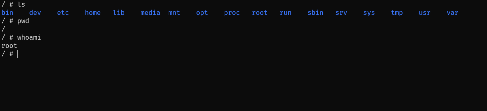
sh shell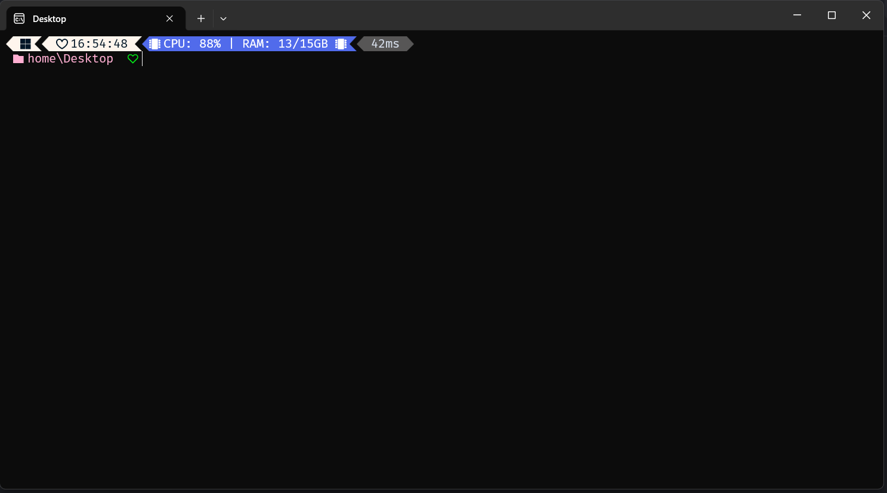
Windows PowerShell - 也是一種 shell- 終端與 Shell：終端（terminal）是視覺介面，而 Shell 是實際解讀指令的程式。bash 是 Linux/macOS 最常見的 Shell，zsh/fish 提供更好的易用性。
- 基本導航：
cd、pwd；絕對路徑 vs 相對路徑；.（當前目錄）與..（父目錄）。 $PATH與程式查找：Shell 透過$PATH環境變數尋找可執行檔；which可查詢指令實際路徑。- 常見命令：
cat、sort、uniq、head/tail、grep、sed、find、awk。 - 推薦替代工具：
eza（取代ls）、bat（取代cat）、ripgrep（取代grep）、fd（取代find）。 - 管道與組合：
|串接多個程式的輸出入，可組合出複雜的一行指令。 - 腳本撰寫慣例：shebang（
#!/bin/bash）決定用哪個直譯器執行；set -euo pipefail讓腳本在出錯時提早退出；建議搭配shellcheck檢查腳本。 - AI 輔助：可用 LLM 解釋命令用途、協助撰寫與除錯 Shell 腳本，或將過長的 bash 腳本（100+ 行）轉譯成 Python。
2. 命令列環境（Command-line Environment）
- CLI 慣例五要素：參數（arguments）、串流（streams）、環境變數（environment variables）、返回碼（return codes）、信號（signals）。
- 參數與旗標：
$1~$9存取個別參數；$@存取全部參數；旗標慣例為-x單字母或--xxx長名稱，可合併寫（如ls -la）。 - Globbing 通配符：
*（任意字元）、?（單一字元）、{}（多重展開）；zsh 支援**遞迴匹配。 - 串流機制：每個程式都有
stdin/stdout/stderr三條標準流；管道中的多個程式是「同時」啟動並並行執行。 - 環境變數：賦值語法
foo=bar（等號兩側不可有空格）；用export讓變數傳遞給子行程。 - 返回碼：程式結束時回傳 0（成功）或非 0（失敗）；
&&（前者成功才執行）、||（前者失敗才執行）。 - 信號（Signals）：
Ctrl-C實際上是 Shell 送出SIGINT訊號中斷正在執行的行程。
3. 開發環境與工具（Development Environment and Tools）
- IDE vs 終端工作流：IDE（如 VS Code）易上手、AI 整合較完整；終端工作流（tmux + Vim + zsh）輕量、在無 GUI 環境也能用。建議兩者都熟悉，至少精通一種。
-
Vim 的哲學：Vim 的介面本身就是一套「程式語言」，按鍵是可組合的命令，追求思考與操作同步的效率。
- 模態編輯（Modal Editing）：Normal、Insert、Replace、Visual、Command-line 五種模式；
<ESC>隨時回到 Normal 模式。 - 「動詞＋名詞」語法：移動指令（
w下一個字、0/$行首行尾）可與編輯指令（d刪除、c修改、y複製）組合，並可加上數量與修飾詞（如ci(修改括號內文字）。 - Vim 無所不在：VS Code（VSCodeVim 外掛）、Zsh、甚至 Claude Code 都內建 Vim 模式支援。
- 模態編輯（Modal Editing）：Normal、Insert、Replace、Visual、Command-line 五種模式；
- Language Server：透過 LSP（Language Server Protocol）提供自動完成、內嵌文件顯示、跳轉定義查找所有引用、匯入管理等功能。
- AI 輔助開發的三種形態：自動補齊（autocomplete）、行內聊天（inline chat）、編程代理（coding agents）。
4. 調試與效能分析（Debugging and Profiling）
- Print Debugging 與 Logging：加入輸出定位問題是最基本的手段；更進階是用日誌框架（INFO/DEBUG/WARN/ERROR 等嚴重級別、支援結構化資料）。
- 除錯器（Debuggers）：適合「不確定要印什麼」或「很難重現」的情境。泛用型有
gdb、lldb，語言專用型有 Python 的pdb。 - Record-Replay 除錯：
rr工具能記錄一次執行過程並「確定性地」重播，還能用reverse-continue、reverse-step等指令逆向除錯。 - 系統呼叫追蹤：
strace（Linux）/dtruss（macOS）可觀察程式發出的每個系統呼叫；bpftrace（基於 eBPF）可在核心層做低開銷的追蹤。 - 網路除錯：
tcpdump/Wireshark 抓封包分析；HTTPS 加密流量可用mitmproxy或瀏覽器開發者工具的 Network 分頁。 - 效能量測：
time指令拆解出 Real（壁鐘時間）、User（使用者程式碼 CPU 時間）、Sys（核心程式碼 CPU 時間）三種時間，可判斷程式是卡在運算還是卡在等待。 - 資源監控：
htop/btop、iotop、free、lsof、ss。 - CPU 效能分析器：Linux 標準工具
perf；perf stat看整體概覽，perf record/perf report搭配火焰圖（Flame Graph）視覺化熱點。各語言專屬：Python 的cProfile/py-spy、Go 的go tool pprof。 - 效能基準測試：
hyperfine用來比較不同實作或工具的效能，自動跑多次取平均與標準差。
5. 版本控制與 Git（Version Control and Git）
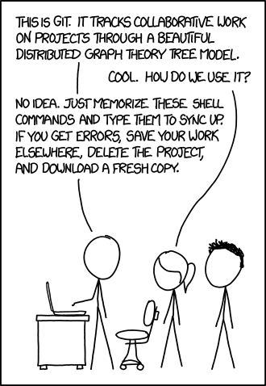
- 單人開發也有用：能隨時回顧舊版本、留下修改原因的紀錄。
- 多人協作不可或缺：能快速看出是誰在何時改了什麼、快速找出是哪次修改導致某個測試壞掉。
資料模型
Git 與其他版本控制系統（如 SVN）最大的不同，在於它把檔案與目錄的變化歷史，模型化成一系列的「快照（Snapshot）」：每一個快照就是某個時間點、整個頂層目錄樹的完整狀態。
// 1. 檔案 (blob)：就是一堆單純的位元組 (byte)，本身不記錄檔名，只有內容
type blob = array<byte>
// 2. 目錄 (tree)：把檔名/目錄名對應到特定的 blob 或其他 tree (支援子目錄)
type tree = map<string, tree | blob>
// 3. 快照 (commit)：記錄父節點、作者、訊息，以及指向該次快照頂層 tree 的指標
type commit = struct {
parents: array<commit>
author: string
message: string
snapshot: tree
}
// 4. 物件儲存庫 (objects)：Git 的核心是一個大 Map，所有物件以 SHA-1 雜湊值定址
objects = map<string, blob | tree | commit>
// 5. 參照 (references)：將人類可讀的名稱 (如 main, HEAD) 對應到特定的 SHA-1 雜湊值
references = map<string, string>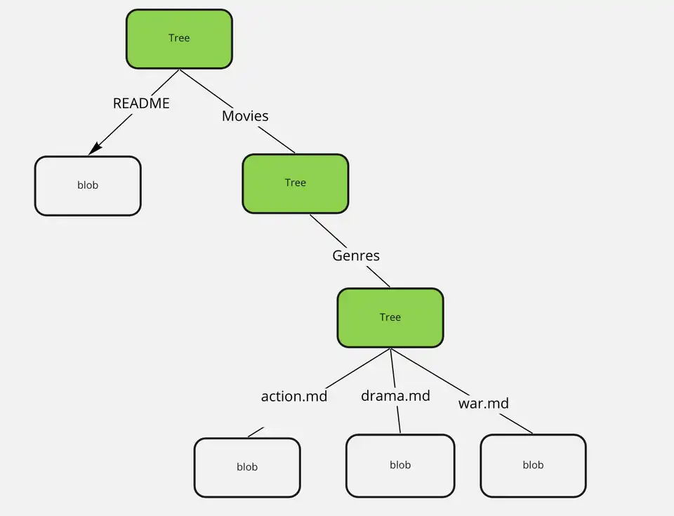
src: The Data Structures Behind Git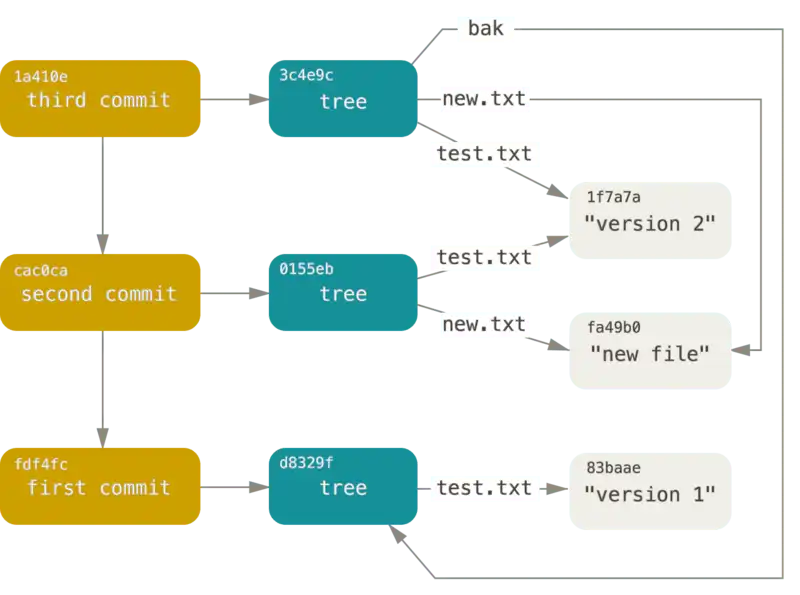
src: The Data Structures Behind Git三個核心概念：blob、tree、commit
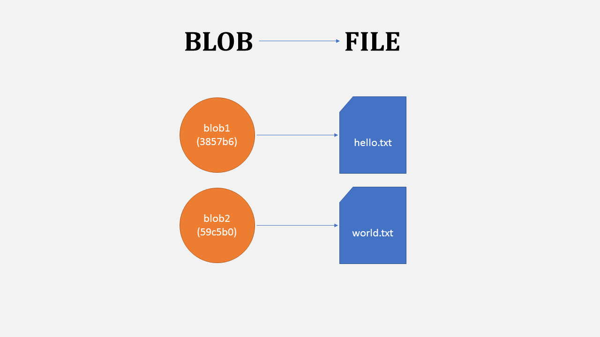
blob（檔案）：就是一堆位元組（byte），本身不記錄檔名，單純是內容。src: xosh.org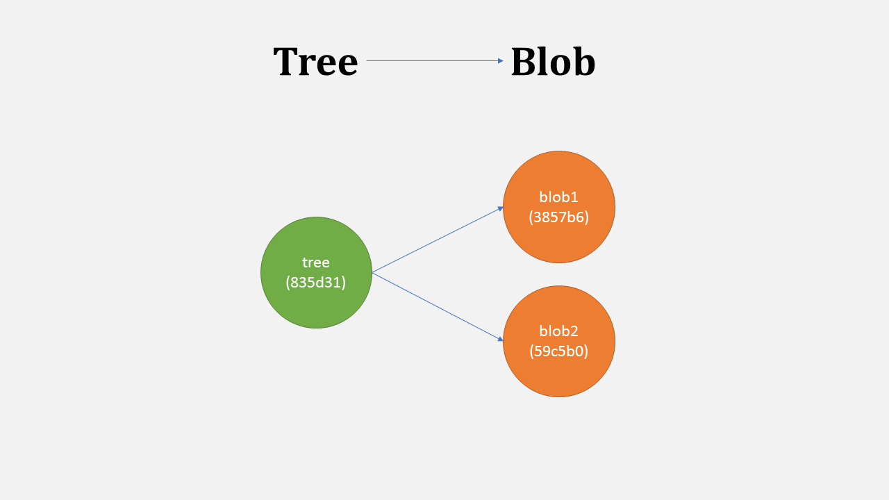
tree（目錄）：把名稱對應到 blob 或其他 tree，所以目錄底下可以再放子目錄。src: xosh.org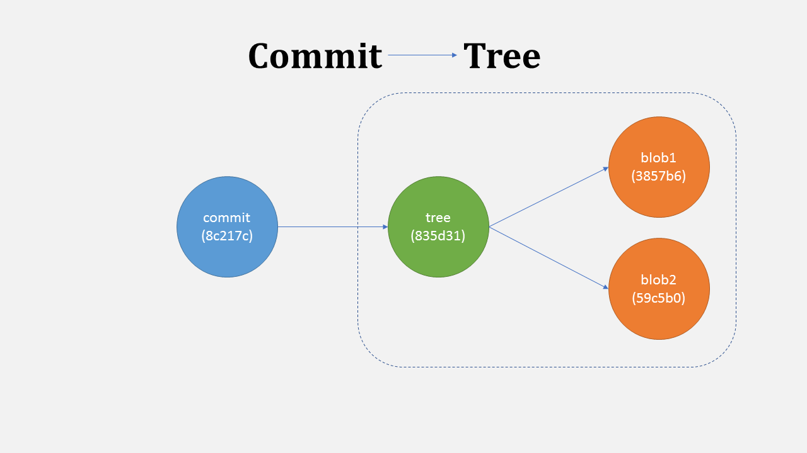
commit（快照）：記錄父 commit、作者、訊息，以及指向這次快照對應的頂層 tree；commit 本身不可變，「修改」歷史其實是建立新的 commit。src: xosh.org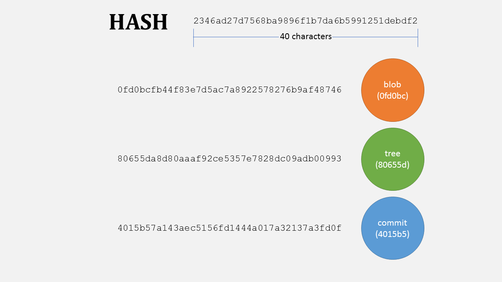
所有物件以 SHA-1 雜湊內容定址（content-addressed），彼此靠雜湊值互相參照。src: xosh.org歷史是 DAG（有向無環圖）
Git 的提交歷史不是單純的線性列表，而是有向無環圖（Directed Acyclic Graph）。因為一個 commit 可以有多個父提交，例如將兩條平行開發的分支合併（Merge）時，產生的合併提交就會指向兩個父節點。
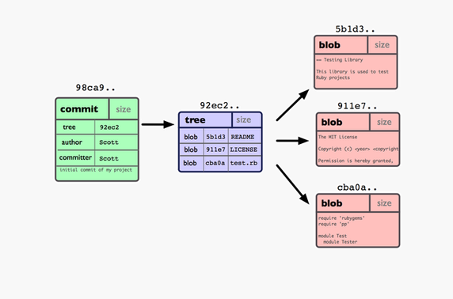
src: xosh.orgReferences 與 HEAD
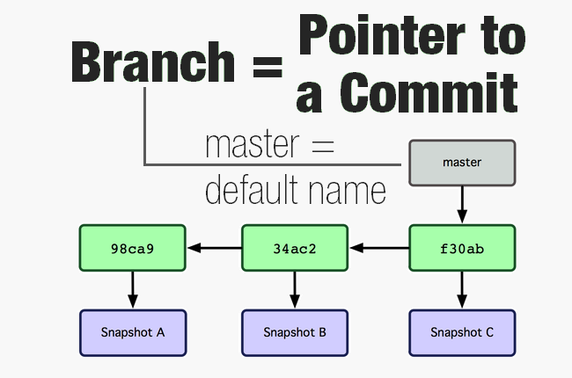
src: xosh.org- References（參照）：人類記不住 SHA-1 雜湊值，所以 Git 用 References 來指向特定的 commit。最常見的 Reference 就是分支（例如
main）。分支指標是可變的，當你在該分支新增 commit 時，指標會自動往前推移。 - HEAD：代表你目前所在的位置（通常指向某個分支，如
HEAD -> main）。 - Detached HEAD（分離的 HEAD 狀態）：如果你直接
checkout到某個特定的 commit 雜湊值，HEAD就會脫離分支，直接指向該 commit。在這種狀態下做的任何新提交，如果沒有建立新分支把它接住，切換回其他分支後這些新提交就會變成「孤兒」，最終被 Git 回收。
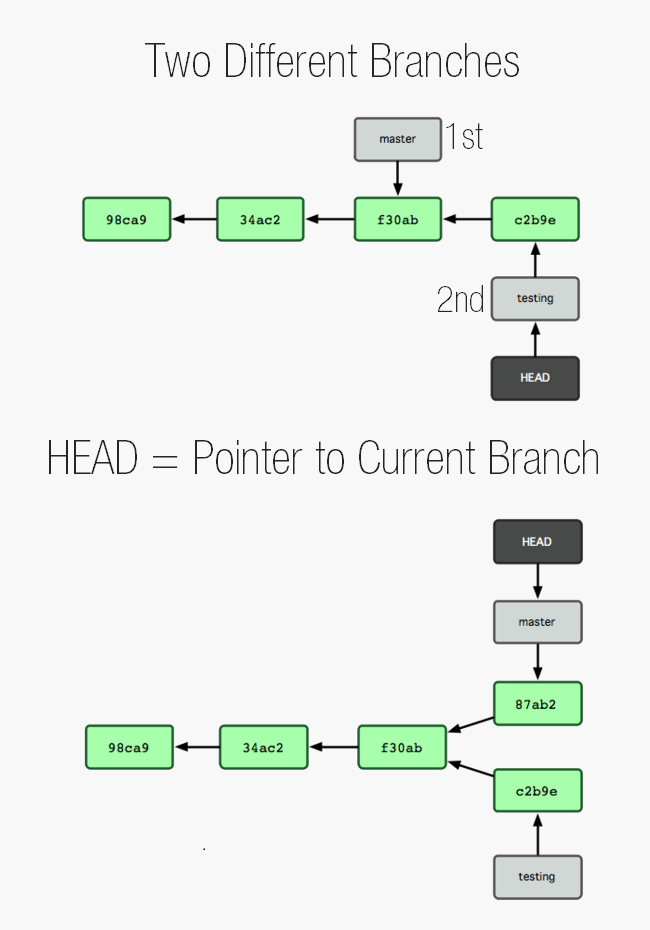
src: xosh.org儲存庫三個區域
- 工作目錄（Working Directory）：你目前真正在編輯的實體檔案。
- 暫存區（Staging Area / Index）：讓你能選擇「這次要提交哪些修改」，可以把現況拆成多個獨立、乾淨的 commit。
- 儲存庫歷史（Repository / History）：已經被 commit 記錄下來的不可變快照。
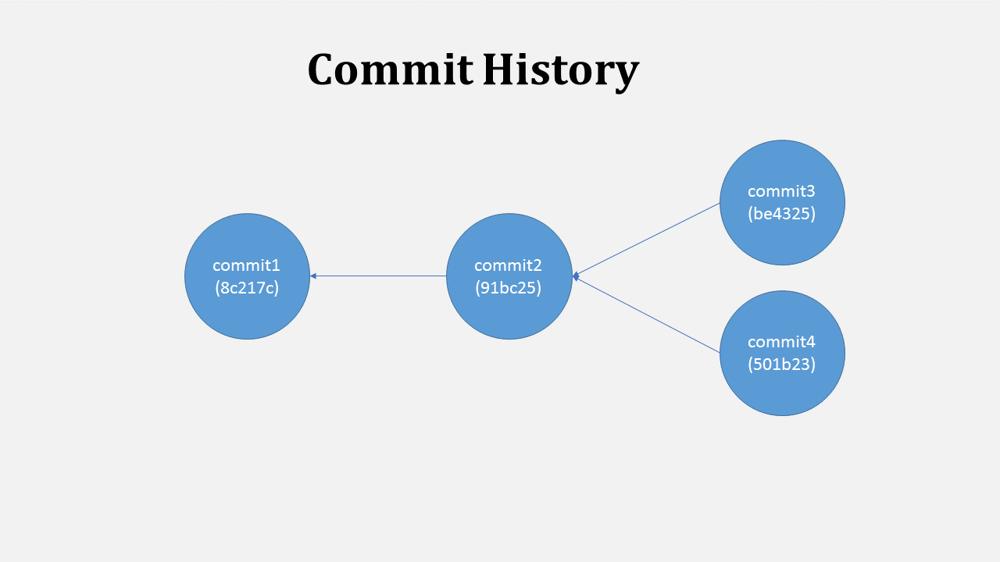
src: xosh.org常用指令速查
- 基礎：
git init、git status、git add、git commit、git log --all --graph --decorate、git diff - 分支與合併：
git branch、git switch、git checkout -b <name>、git merge、git rebase - 遠端操作：
git remote、git push、git fetch、git pull、git clone - 進階：
git add -p（互動式部分暫存）、git rebase -i（互動式重寫歷史）、git blame、git stash、git bisect（二分搜尋找出引入 Bug 的 commit）、git worktree（同時檢出多個分支到不同目錄，多 AI 代理並行修改時常用）
進一步閱讀：Oh Shit, Git!?!、Git 官方書籍
6. 程式碼打包與發布（Packaging and Shipping Code）
寫完程式碼只是第一步，如何讓別人的電腦（或伺服器）也能順利執行你的程式，才是「打包與發布」要解決的核心問題。
-
依賴與環境：當你執行像是
pip install requests這樣的指令時，套件管理員在背後幫你做了四件重要的事情：- 搜尋套件庫（如 Python 的 PyPI、Node.js 的 npm）
- 尋找對應版本（根據 OS、硬體架構與語言版本）
- 解析遞移依賴（Transitive Dependencies）
- 下載與安裝到正確的系統目錄
1.0 版，而專案 B 需要套件 X 的 2.0 版，如果把它們都安裝在全域環境，就會發生版本衝突。
- 虛擬環境：在 Python 中，我們會用
venv來為每一個專案建立獨立的資料夾環境，將各專案的依賴完全隔離。現代更推薦使用由 Rust 開發的uv，安裝速度極快（快上數十倍），還能同時管理多個 Python 版本並存的問題。 - 專案規格檔：
pyproject.toml（基於 PEP 517 與 PEP 621）現在所有的專案設定都應該收斂到這個單一檔案中。 - 製品與打包（Artifact）：在 Python 生態系中，最常見的製品格式是 Wheel (.whl)，透過
uv build可以將原始碼同時打包成預先編譯好的 Wheel 以及原始碼分發包。 -
版本發布與 SemVer：語意化版本（SemVer），格式為
MAJOR.MINOR.PATCH：- PATCH（修訂號）：單純修復 Bug，完全向下相容。如
1.0.0→1.0.1 - MINOR（次版號）：新增了新功能，向下相容。如
1.0.1→1.1.0 - MAJOR（主版號）：引入了破壞性變更（Breaking Changes）。如
1.1.0→2.0.0
- PATCH（修訂號）：單純修復 Bug，完全向下相容。如
- 其他主題：可重現性（Reproducibility）、虛擬機與容器（Docker）、配置管理、服務與編排（Kubernetes）、CI/CD。
7. 代理式編程（Agentic Coding）
編程代理是一個被賦予了工具存取權的對話式 AI。它通常存在於你的 IDE 內（如 Cursor、Windsurf），或是獨立的終端機工具中（如 Claude Code）。它不僅能跟你對話，還能自主執行以下操作：
- 讀取與寫入本地檔案
- 進行網路搜尋（查閱最新 API 文件）
- 在終端機執行 Shell 指令（如跑測試、編譯、建置）
運作原理
不要把 Agent 當成魔法，底層邏輯其實非常清晰：
- LLM 的本質：大語言模型本質上依然只是在做「給定輸入字串 → 預測輸出字串」的機率分佈取樣。
- Harness：Agent 的核心其實是一個介於「使用者」與「LLM」之間的控制程式（Harness）。
-
回饋迴圈（Feedback Loop）：
- Harness 會把你的提示詞、對話歷史、以及目前工作區的狀態組合成一大包字串送給 LLM。
- LLM 回傳的字串中可能包含「呼叫特定工具的指令」（例如：讀取檔案 A 或執行指令 B）。
- Harness 攔截到這個指令後，真正在你的電腦上執行它，並把執行結果當作新的輸入再次送給 LLM。
- 每次工具呼叫，都會重新觸發一次 LLM 的推理，直到任務完成。
典型用例
- 實現新功能：直接用自然語言描述需求。若搭配測試驅動開發（TDD），Agent 可以自己寫代碼、自己跑測試，直到測試通過為止。
- 修復 Bug：給 Agent 一個報錯訊息，讓它自行在專案中搜尋問題、修改程式碼，並重新執行失敗的檢查來驗證是否修復。
- 重構程式碼（Refactoring）：指令 Agent 整理架構或抽離共用邏輯。
- 程式碼審查（Code Review）：搭配 GitHub CLI，讓 Agent 直接幫你看 Pull Request。
- 程式碼理解：對著一個完全陌生的龐大專案問問題，極度有助於新人上手。
- Vibe Coding：完全不親手寫任何一行程式碼，純粹靠自然語言與 Agent 互動來完成整個軟體專案。
進階用法
- 可重用的 Prompt / 模板：把複雜、常用的提示詞（如你個人的 Code Style 規範）存成模板重複使用。
- 並行多代理（Parallel Agents）與
git worktree：當任務龐大時，可同時開啟多個 Agent 處理不同任務；搭配 Git 的worktree功能，讓不同的 Agent 在獨立的目錄下操作同一個儲存庫的不同分支，互不干擾。 - MCP（Model Context Protocol）：一個革命性的開放協議，標準化了「AI 模型如何連接外部工具與資料源」的方式。例如你可以安裝一個 Notion 的 MCP 伺服器，你的 IDE 裡的 Agent 就能直接讀寫你的 Notion 筆記。
- 上下文管理（Context Management）：LLM 的上下文窗口（Context Window）是有限制的，且塞入過多無用資訊會導致 AI「幻覺」。實用策略：適時「清空上下文」、善用「回滾對話」、以及「上下文壓縮」。
進一步閱讀：200 行程式碼理解 Agent 核心概念
8. 程式碼品質（Code Quality）
寫出能跑的程式碼只是第一步，如何確保程式碼在多人協作、長期維護下依然保持一致性與穩定性？
-
格式化（Formatting）：處理表面語法的一致性（單引號還是雙引號、大括號要不要換行、import 的順序等）。
- 高度可配置：如前端常用的
Prettier，允許你微調各種排版細節。 - 獨裁且不可配置：如 Python 的
Black或 Go 的gofmt，故意限制配置選項，徹底消滅「單車棚效應（Bikeshedding）」。
.editorconfig。 - 高度可配置：如前端常用的
-
靜態檢查（Linting）：比格式化更深入，負責分析程式碼並找出反模式、潛在 Bug 或未使用的變數。進階工具
semgrep是基於抽象語法樹（AST）的搜尋工具，讓你即使跨越不同的程式語言，也能自訂檢查規則。 -
測試（Testing）：依照粒度分為三層：
- 單元測試（Unit Test）：測試單一函數或類別，速度最快。
- 整合測試（Integration Test）：測試多個模組之間的互動是否正常。
- 端到端測試（E2E / Functional Test）：模擬真實使用者操作整個系統，速度最慢但最接近真實。
- TDD（測試驅動開發）：先寫好測試（此時測試會失敗），再寫實作程式碼讓測試通過。
- 回歸測試：當你修好一個 Bug 後，一定要寫一個對應的測試，確保未來這個 Bug 永遠不會再出現。
- 屬性測試（Property-based Testing）：定義屬性，由工具（如 Python 的
Hypothesis）自動生成大量隨機且極端的輸入來轟炸你的程式，找出你想都沒想過的邊界情況。 - 測試覆蓋率：這是「輔助指標」，切忌盲目追求 100% 覆蓋率，因為「執行過這行程式」不代表「驗證了這行邏輯的正確性」。
- Pre-commit Hooks：讓你在每次輸入
git commit時，自動觸發格式化、Linting，甚至跑部分測試，確保那些「髒亂、不符合規範」的程式碼連進入 Git 儲存庫的資格都沒有。 - 持續集成（CI）：利用如 GitHub Actions 等工具，在每次
push、發起Pull Request或定期排程時，在雲端伺服器自動執行格式化檢查、Linting、測試與型別檢查。CD（持續部署）進一步延伸 CI，當測試全數通過並合併到主分支後，自動建置並部署到正式環境。 - 命令運行器（Command Runner）：現代專案的指令常常又臭又長。我們可以使用像
just（現代版的make）這樣的工具，把複雜的指令包裝成簡短好記的別名（如just lint或just test）。 - 正則表達式（Regular Expressions）：一種用來「匹配字串集合」的強大模式語言，在程式碼品質控管中無所不在。
9. 程式碼之外（Beyond the Code）
軟體開發本質上是一場跨越時間與空間的溝通。你寫下的程式碼、註解、README 與 Commit Message，都是在與其他人（未來的同事、接手的維護者、半年後的自己）進行單向溝通。
單向溝通的核心原則：永遠專注於傳達「為什麼（Why）」，而不是「做了什麼（What）」。（因為「做了什麼」，看程式碼本身就知道了。）
值得寫的注釋類型：
- 具體可執行的 TODO：要註明為何延後、何時需要處理。
- 外部參考連結：演算法的出處、依循的商業規格或 RFC 網址；務必盡量使用永久連結（Permalink）。
- 正確性論證：當一段程式碼的邏輯「非顯而易見」時，解釋它為什麼是對的。
- 踩坑記錄（Gotchas）：如果你花了超過 30 分鐘除錯才找出一個「非直覺」的解法，一定要記下來，拯救未來的讀者。
- 魔法數字 / 常數的理由：為什麼這裡要乘以
1.05？為什麼重試次數是3？ - 「為什麼不這樣做」的說明：記錄曾經嘗試過但失敗的死胡同，避免日後有人「熱心」地把你現在的正確做法又「修正」回錯誤的版本。
README 撰寫原則（漏斗式結構）：
- 這是做什麼的？（一句話摘要）
- 為什麼我該在意？（痛點與價值展示）
- 怎麼用？（先給一段最基礎的 Demo 或程式碼範例）
- 怎麼安裝？（最後才講繁瑣的環境建置與安裝步驟）
Commit Message 的藝術：
- 複雜變更的結構：建議採用「問題 → 解決方案 → 影響與取捨」的結構來撰寫。
- 導入規範：強烈建議採用 Conventional Commits（如
feat:,fix:,docs:等前綴），讓機器與人類都能一眼看懂改動性質。 - 與 LLM 協作的技巧：如果請 LLM 代寫 Commit Message，千萬不要單純只把 diff 丟給它，這樣只會得到「新增了三行程式碼」這種廢話。最好在「原本協助你開發該功能的同一個對話 Session」中請它寫，並明確要求它聚焦「Why」。
貢獻與開源協作：
- 完美的 Bug Report：發 Issue 前先搜尋是否已有重複。報告必須包含：環境資訊、預期結果 vs 實際結果、明確的重現步驟。
- MRE（最小可重現範例）：提供一個不含任何無關業務邏輯的 Minimal Reproducible Example，這是對維護者最大的尊重。
- 清晰的 PR：一個 PR 只能專注於單一改動，並清楚說明動機。
- AI 程式碼的責任歸屬：即使程式碼是 AI 寫的，你依然是這段程式碼的主人。必須徹底理解並把關後才能提交。
Code Review 文化：
- 對事不對人：說「這段函式邏輯不太清楚」，而不是說「你寫得很亂」。
- 提問大於命令：用「我們這裡是不是可以考慮用 Map？」代替「把這裡改成 Map」。邀請討論能降低防備心。
- 區分層級：清楚標示哪些是「必須修改的 Blocker」，哪些只是「個人偏好的 Nits（吹毛求疵）」。
- 不要吝嗇讚美：看到寫得漂亮的程式碼，明確地給予肯定。
參考來源
- ENIAC 與 Betty Snyder / Glen Beck 照片
- J. Robert Oppenheimer 與 John von Neumann 合照
- Ken Thompson 與 Dennis Ritchie 合照
- ChatGPT 使用者介面截圖
- The Missing Semester of Your CS Education
- Explain Git in Simple Words
- The Data Structures Behind Git
- Oh Shit, Git!?!
- Pro Git（Git 官方書籍）
- 200 行程式碼理解 Agent 核心概念
- Conventional Commits 規範
- OWASP Top 10
- System Design Primer